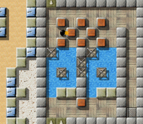
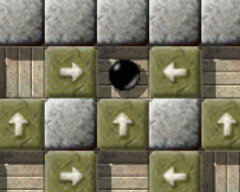
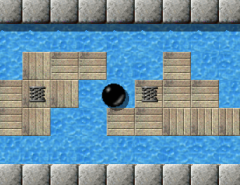
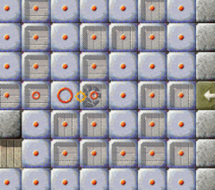

Level des MonatsJeden Monat werfen wir einen näheren Blick auf einen herausragenden Level. Herausragende Levels sind dabei solche, die sich durch die höchsten Bewertungen durch die Spieler auszeichnen, und dabei zugleich von genügend vielen Spielern auch bewertet wurden. Es ist also Ihre Wahl, die den Level des Monats bestimmt. Bitte werten Sie Levels, nachdem Sie sie gespielt haben, und vergessen Sie nicht, die Wertungen zusammen mit Ihren Spielergebnissen zum Ende eines jeden Monats uns zuzusenden. Sie können alle vorigen Level des Monats in unserem Archiv finden. November 2007: „Big Adventures“ von Jon 'WB' Sneyers„Willkommen, Abenteurer! Der Weg ist lang und gefährlich, sei vorsichtig!“ Jon hat uns eine kurze, akkurate Willkommensnachricht am Anfang seines epischen Levels hinterlassen. Er ermutigt uns darin, all die kleinen Rätsel-Perlen auszuprobieren und zu lösen, die er in diesem Juwel von Enigma 0.92 aufgereiht hat. Und im milchigen Glanz jeder einzelnen dieser kleinen, polierten Perlen, spiegeln sich die Erinnerungen an klassische Level wieder, oder Visionen von Leveln, die noch kommen, jede auf eine neue und elegante Weise, die die Schönheit ihrer vielfältigen Puzzles einfägt, so wie ein Haiku die Gesamtheit eines Momentes in nur drei Zeilen einzufangen vermag ... lasst uns für diesen Moment innehalten und durch den Level des Monats November 2007 schlendern, durch „Big Adventures“!

Enigma IV # 100 - Big Adventures
Nicht viel hat sich in den Bewertungen der vorigen LdMs verändert: „Quadropolis“ hat drei weitere Wertungen eingesammelt, und seinen Vorsprung eingebüßt. Nun liegen „Quadropolis“ und „Island Labyrinth“ Kopf an Kopf, zwei Monate vor der abschließenden Verkündung des „Level des Jahres“! „Big Adventures“ beginnt in der Rangliste auf Platz 8, und wird sicherlich seine verdiente Position unter den besten zehn Levels in Enigma noch für viele LdMs verteidigen. Wie immer, können Sie weitere Details über die Bewertungen in unserem LdM-Archiv lesen. „'Big Adventures' ist viel einfacher und angenehmer zu spielen“Jons klassischer Level führt uns geradewegs zurück zu den Wurzeln von Enigma und sogar der großartigen Oxydserie selber. Er ist der zweite epische Level nach „Labyrinth of Puzzles“ und bietet uns eine Perspektive: Bereits die Anfangsszene präsentiert uns eines der am häufigsten in Enigma genutzten Muster: Drei Holzsteine in einer Reihe. Wir kennen diese Kombination auswendig, und wie man sie löst, und ein Lächeln jagt über mein Geischt, wenn ich auf mag-heut die gelegentliche Frage lese, wie man „Jam“ aus Oxyd Magnum angeht. Als ich das erste Mal „Big Adventures“ begegnet bin, lief dasselbe Lächeln über mein Gesicht und ich schob die drei Blöcke in einer fast abwesenden Manier - nur um kurz darauf festzustellen, dass, dieses Mal, mehr dahinter steckt: Ich hatte das Wasser vergessen. Und nun hatte ich einen Holzstein zu wenig, um es zu überbrücken. Nach all den Jahren konnte mir Jon doch noch eine neue Wendung dieses alten Musters zeigen. Und plötzlich schloss ich diesen Level in mein Herz …

Warum schauen mich alle so an?
Um einen Kommentar für „Big Adventures“ schreiben zu können, habe ich
erstmal versucht, es wieder zu lösen, vor allem noch schneller. Nach unzähligen
Fehlversuchen hab' ich's endlich in 8:57 Minuten geschafft. Im Gegensatz zum
Weltrekord von Stupid aber doch sehr langsam.
„Big Adventures“ ist viel einfacher und angenehmer zu spielen als
andere LdM, da keiner die Murmel verfolgt, und es ist auch keine Schnelligkeit
gefragt. Bei diesem Level geht es hauptsächlich darum, Blöcke zu verschieben. Er
besteht aus vielen kleinen Rätseln, bei denen man sofort an Sokoban denkt. In
manchen Räumen hat es wirklich Spaß gemacht, den Weg zu den Oxyds freizumachen,
in anderen dagegen war es echt harte Arbeit. Vor allem das Weltall-Rätsel fällt
mir dazu ein. Aber nach der ganzen Arbeit wird man schließlich doch belohnt,
denn die Räume, die danach kommen, sind meine Lieblingsräume in 'BA'.
Ich würde sagen, „Little Puzzles“ ist die vereinfachte Version von
„BA“ und man muss ein paar Runden laufen, um das Spiel zu beenden.
Bei „BA“ gibt es dagegen keinen Weg zurück; wenn man einen Fehler
gebaut hat, ist die ganze Arbeit im Eimer und man muss wieder von vorn
anfangen.
Das Einbahnstraßen-Labyrinth … es fühlt sich so bekannt an. Nein, ich meine nicht bekannt vom Tutorial-Level „Timers“, wo ich die Benutzung von Timersteinen demonstriert habe. Man möchte meinen, dass es wesentlich mehr solche Irrgärten in den verschiedenen Leveln Enigmas gibt, aber ich konnte sie nicht finden. Auf der Suche in meinen Erinnerungen fand ich schließlich eine andere wundervolle Serie von Spielen, außerhalb der Murmel-Welt, die Robot-Serie, die Einbahnstraßen in einer ähnlichen Weise verwendete. Eine weitere Erinnerung meiner Kindheit … Heute finden wir ein Einbahnstraßen-Labyrinth leicht anderer Art in Jacobs „Pleasure Garden“. Und natürlich in „Little Puzzles“, welcher mit „Big Adventures“ durch mehr als nur ein gemeinsames Rätsel verbunden ist. Ich suche nach wie vor nach den verbleibenden Fundorten, und bin für jeden Hinweis dankbar. (Nachtrag: Es gibt einen weiteren in Esprit 91; vielen Dank, Clifford!) „Mir hat das große Abenteuer viel Spass gemacht“Der Widerschein von „Civil Engineer“ … eine recht einfache Version, das muss ich zugeben. Aber mit Sicherheit nicht bis zur Trivialität vereinfacht. Was folgt ist eine kurze Rückbesinnung auf all die Sprunglevels in Enigma, mit einer Tradition, die bis zu „J.U.M.P.“ und „Jump!“ zurückreicht, die in Version 0.70 zu Enigma kamen. Ein Gedankenblitz - „Balance“ - für einen Kurzaufenthalt. „Balance“ war Teil von Enigma bereits in 0.39, pausierte als Testlevel für lange Zeit, bis wir ihn für 1.00 reaktivierten, um damit die Balance-Dekade in Levelpack I zu komplettieren. Hier, in „Big Adventures“, führt ein solcher Balanceakt zum nächsten Puzzle, einer wundervollen Metapher auf „Reach the Dock“. Ein Intermezzo folgt, Jon ermutigt uns, seinem Pfad weiter zu folgen …

Fliegen …
„Big Adventures“ ist ein interessanter Level, vor allem aufgrund des
„Split-Screen“-Designs. Man erkennt sofort am Start, was zu tun ist,
nämlich jede Menge Türen zu öffnen. Auch im weiteren Verlauf bekommt man immer
wieder einen Einblick in die noch folgenden Aufgaben, das ist eine gute
Motivations-Spritze, da stört auch der streng lineare Aufbau nicht.
Die Anforderungen ans Gehirn sind zwar nicht besonders hoch und bestehen
nur aus dem Schieben von Kisten, trotzdem bildet das Ganze zusammen mit
einigen kleineren Geschicklichkeits-Einlagen einen netten Mix.
Es ist aufgrund der Puzzles sicher von Vorteil, wenn man ein Faible für
Sokoban hat; da dies bei mir der Fall ist, hat mir das große Abenteuer
viel Spass gemacht.
Das einzige, was mir an dem Level nicht gefällt, ist die Tatsache, dass ich
nicht die Bestzeit halte. Ich hoffe diesen Malus kann ich irgendwann
noch beseitigen. ;-)
Worauf ich Jennys Worte wiederholen möchte: „Es ist auch keine Schnelligkeit gefragt“, insbesondere wenn nur 6 Sekunden fehlen. :-) Auf unserem Weg durch diese Perlenkette aus Levelpack IV, führen uns ein Weltraumgang und eine dicht, fast undurchdringlich scheinende Packung aus Blöcken und Bomben zu einem großen Sumpf. Erinnern Sie sich? Sumpf und ein Rotor waren die ersten Objekte, die den Weg in Oxyd 1 blockierten, und selbst heute noch präsentieren sumpfige Areale Hindernisse für uns, in „Big Swamp“ und sogar in „The Aztec Temple“. „Big Adventures“ wäre ohne einen Sumpf einfach nicht komplett. „I wanted to make some longer and more relaxed puzzle levels“Ein Labyrinth aus Impulssteinen inspirierte womöglich illmind und Raoul, „Bump Ahead“ und „Don't Touch“ zu schreiben, und wir denken auch an „Slinky Mayhem“. Wir wissen, dass wir bereits die Mitte auf unserem Weg zurück überschritten haben, als wir all den gelösten Rätseln wieder begegnen, wenn wir durch den Sand rollen und die Steine zerbrechen, die unseren Weg säumen. Dieser Weg erinnert uns irgendwie an eine Rennbahn, ein Level in der fernen Zukunft Enigmas … nur um einer Vision von „The Disappearing Block“ am Ende eines Zickzack-Kurses gegenüberzustehen. Diese Vision zieht uns aus Enigmas Zukunft zurück in seine Vergangenheit, weit zurück zu den Anfängen von Jacob Scotts Kariere, und seinem zweiten Level für Enigma. Mit dem Blick auf den Irrgarten aus Einbahnstraßen im nächsten Raum, wissen wir, dass es bald Zeit sein wird, diesen Level zu beenden. Aber bevor wir das tun, hören wir Jon Sneyers zu, der diese Reise für uns entworfen hat:
Man kann Informationen über mich auf meiner Homepage finden. Kurz
zusammengefasst bin ich ein 26-jähriger PhD-Student in Computerwissenschaften
aus Leuven in Belgien, interessiert an freier Software (mit GNU/Linux seit
nunmehr einer Dekade), linker Politik und Musik.
Wenn ich mich recht entsinne, habe ich Enigma entdeckt, als ich systematisch
nach freien (wie in der GPL) Spielen für GNU/Linux gesucht habe, in einem
Versuch meinen Freunden (und mir selbst) zu beweisen, dass es sie wirklich gibt
;) und dass sie auch ganz schön ausgefeilt sein können. Das muss
so in etwa 2002 gewesen sein. Zu dieser Zeit habe ich immer noch studiert
(Informatik), so dass ich damals jede Menge (Frei-)Zeit hatte. :)
Nachdem ich so ziemlich alle Levels ausprobiert hatte, die zu der Zeit
existierten, hab' ich angefangen, selbst einige zu verfassen, für meine
damalige Freundin Tina. Das erklärt die Gestaltung von „Lotsa
Triggers“ und die rechte obere Ecke von „Little Puzzles“. :)
Glücklicherweise hab' ich die Level dann noch rechtzeitig eingereicht, damit sie
mit dem nächsten Release von Enigma veröffentlicht würden. Ansonsten wären sie
unweigerlich verloren gegangen, denn einige Monate später ist meine Festplatte
gecrasht. Ich war seinerzeit der Ansicht, dass Backups der Vergangenheit
angehören und Festplatten im Zeitalter modernster Technologien nicht mehr
crashen. :/

Ups!
Wie auch immer, nach einigen Geschicklichkeits-Levels wie „Spiral
Race“ und den beiden Skyscrapers, wollte ich einige längere und
lockerere Puzzle-Levels machen. Zuerst baute ich ein paar Yin-Yang-Levels
(„Bridge Builders“, „Block Its Way!“), weil mir das Konzept
wirklich gut gefällt, zwischen zwei Murmeln hin und her wechseln zu
können und sie kooperieren zu lassen.
Dann verfasste ich „Little Puzzles“, das zwar auch von Yin-Yang
Gebrauch macht, aber das Konzept als solches spielt hier nicht mehr die
Hauptrolle (die weiße Murmel ist von der schwarzen isoliert, und hat nur eine
halbe Bildschirmseite mit einem kleinen Puzzle als Aktionsraum). Der Level ist
mit dem Anfangsraum als Mittelpunkt entworfen: Ich wollte einen Level machen, in
dem der Spieler mehrmals zum Anfangsraum zurückkehren muss, und bei jeder
Wiederkehr dem Ziel ein Bißchen näher kommt: den Schiebestein auf den
Bodenschalter zu schieben. Die kleinen Brückenbau-Rätsel hab' ich als
Ausschmückung hinzugefügt.
Für beide, den Spieler und den Leveldesigner, war „Little
Puzzles“ eine Vorbereitung auf „Big Adventures“. „Big
Adventures“ ist ein epischer und zugleich linearer Level, in dem der
Abenteurer zahlreiche Aufgaben unterschiedlicher Art bewältigen muss, um
alle Türen zu öffnen, die den Zugang zum letzten Raum versperren. Der
Level ist zwar geradlinig konzipiert, aber gleichzeitig auch gebogen wie eine
seltsame Art von Spirale, so dass der Ziel-Raum vom Start-Raum aus sichtbar ist.
Man erhält immer wieder eine Vorschau auf Räume, die man noch besuchen
muss, und umgekehrt werden einem mehrmals Rückblicke auf Räume
gewährt, die man bereits durchquert hat.
Der Level ist nicht designt worden, um besonders schwierig zu sein oder sogar
gemein, und auch wenn gelegentlich die Geschicklichkeit des Spielers ein wenig
gefordert ist (z.B. beim Hüpfen mit der Sprungfeder), wird die Verwendung von
Extra-Leben ermöglicht und der Spieler kann vom Startpunkt aus an den bereits
gelösten Rätseln vorbei wieder an den Punkt zurückgelangen, wo ihm ein
Missgeschick eines seiner Leben gekostet hat. Die Hauptschwierigkeit von
„Big Adventures“ liegt in seiner Größe: 9 Screens mit jeweils zwei
Rätseln oder Hindernissen, mindestens.
Wie wir die zwei letzten Wasser-Puzzle hinter uns lassen, enden wir, wo wir vor zehn Minuten begonnen hatten, und sehen vor uns eine weitere Variation über einen altehrwürdigen Typ von Rätseln, ein Sokoban. Wir öffnen die letzten Türen, und durchschreiten dieselben Türen, die wir durch all die Rätsel hinweg geöffnet haben, denen wir begegnet sind. Wir erreichen den abschließenden Oxydraum, der selber wieder ein Portrait ist, ein Portrait des Schwesterlevels „Little Puzzles“ von Jon selbst. Und wir schließen nicht nur die offensichtliche Spirale, die dieses Level in sich selbst zurückfaltet, oder die Selbstreferenzen, die die Türen mit den Rätseln des Levels verbindet, sondern wir schließen auch den Kreis, der ihn mit „Little Puzzles“ verbindet. Nachdem wir „Big Adventures“ gelöst haben, landen wir wieder im Levelmenü für Levelpack IV, und verstehen, dass dieser Level schließlich das Levelpack auch thematisch abschließt, weil es Spiralen nicht nur in einer Dekade, sondern durchgehend immer wieder aufgegriffen hat. Dadurch, und dadurch, dass er den Übergang zu Pack V markiert, schlägt dieser Level abermals eine Brücke zwischen Enigmas Vergangenheit und Zukunft … Jon, vielen, vielen Dank dafür, dass Du uns dieses große Abenteuer geschenkt hast! Schöne Grüße, |